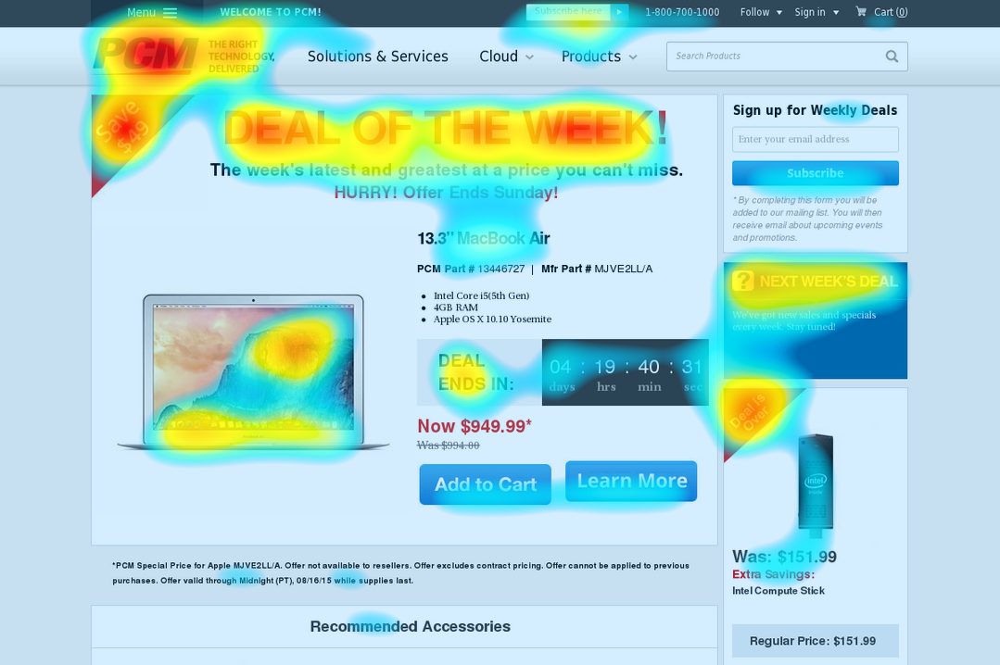

 מערכת TOBII הגדרות מחקר UX מתודות מחקר UX ניתוח DATA אודות עזרים לימודיים לקורס חקר UX באמצעות מעקב עיניים בחרו נושא ללמידה והגיעו מוכנים לשיעור הגדרות מחקר UX התחל מתודות מחקר UX התחל מערכת TOBII התחל ניתוח DATA התחל 1 2 3  מפות חום מתוך מערכת מעקב העיניים יוצאים פלטים מסוגים שונים, באמצעות מפות חום נוכל לקבל מידע חיוני למחקר על מספר רב של משתתפים. לחצו על הנקודות כדי ללמוד על הצבעים השונים במפת החום מעניין אתכם ללמוד עוד? קרא עוד